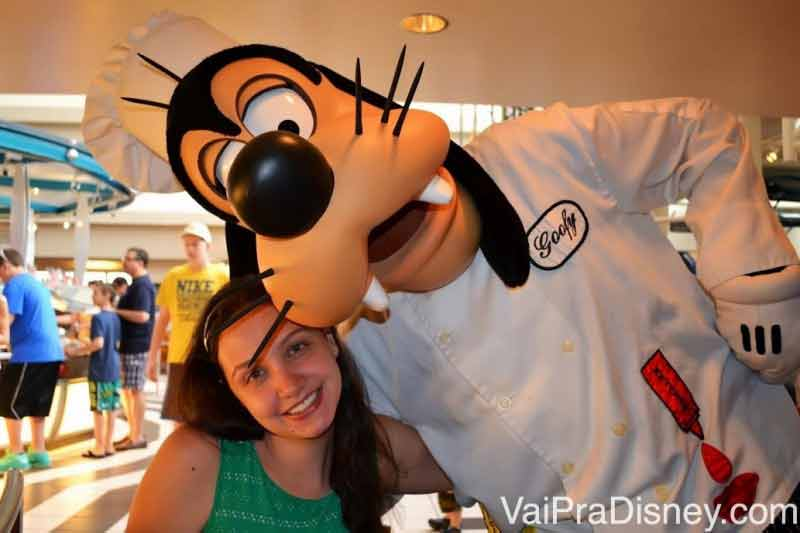
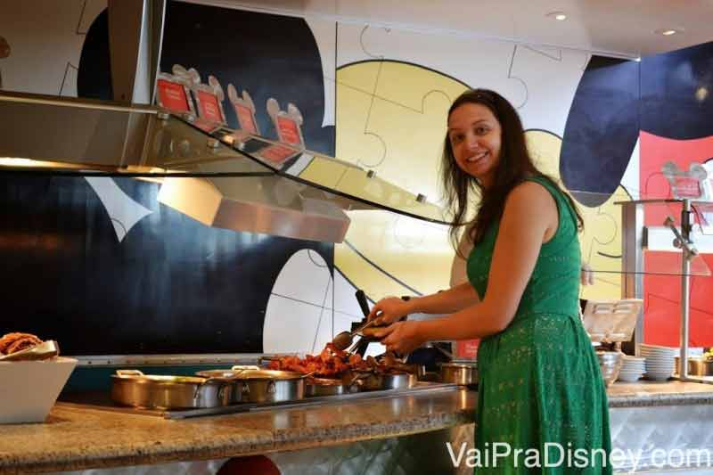
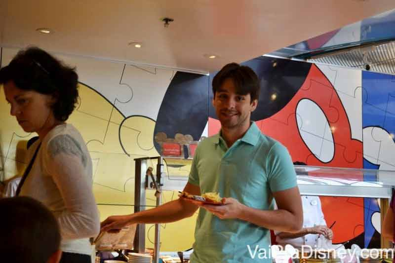
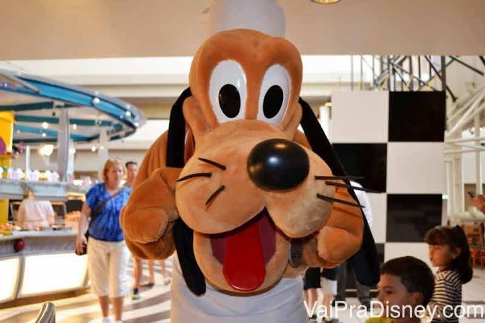

Restaurantes Recomendados

Chef Mickey’s: refeição com a turma do Mickey
Se você já andou de monorail, chances são de você já ter passado NO MEIO de um prédio no seu caminho para o Magic Kingdom. Não importa a idade, todo mundo acha legal passar no meio do prédio e fica pensando “Que prédio legal!”. Pois é, o prédio em questão é o hotel Disney’s Contemporary Resort, um dos mais clássicos (e caros) de todos os hotéis da Disney. O hotel em si é lindo, cheio de restaurantes legais e uma vista incrível para o Magic Kingdom, que fica colado a este hotel (a alguns minutos de caminhada apenas). Enquanto eu ainda não tenho dinheiro para me hospedar lá (rs, eu já quis mas né? não deu.) acho ótimo visitá-lo para ir em seus ótimos restaurantes, composto pelo The Wave, California Grill e Chef Mickey’s, esse último, tema do post de hoje. Quando eu era pequena, eu sonhava em ir no Chef Mickey’s porque sempre avistava algum personagem próximo de uma mesa, quando passava no meio do hotel dentro do monorail. Hoje que já matei essa vontade, espero poder dividir um pouquinho dessa experiência com vocês. Espero que curtam o Chef Mickey’s tanto ou mais que eu!
Foto Divulgação da Disney do Chef Mickeys. Porque toda vez que o monorail passava eu ficava olhando em vez de tirar foto! rs
Atmosfera do Chef Mickey’s
O Chef Mickey’s é um dos dos restaurantes mais procurados da Disney e isso não se deve apenas por sua localização legal. Esse restaurante é recheado de personagens populares, que você enfrentaria uma bela fila caso deixasse para encontra-los no parque, e nem conseguiria um tempo e atenção tão bons como no restaurante. Entre as figuras ilustres por ali estão: Mickey, Pluto, Minnie, Pateta e Donald. Como você pode ver, não só a qualidade, mas a quantidade de personagens também é bem significativa. Todos eles aparecem com roupas de chef de cozinha, o que eu acho a maior fofura do mundo. Eu amo cozinhar, então prefiro os personagens com essa roupa do que com as tradicionais. Me sinto com mais afinidade com a galera toda, hehehe. De qualquer forma, por que estou falando isso? Porque sei que para muitas pessoas, é importante ter uma foto com o Mickey com a roupa tradicional dele, e por isso, achei importante avisar que aqui ele estará com outros trajes. Considere isso antes de ir atrás de uma reserva. 
Mickey cozinheiro, eu adoro essa versão dos personagens!

Donald cozinheiro, tão fofo!
Voltando ao restaurante, o Chef Mickey’s fica num espaço bem aberto dentro do hotel. Não é composto por paredes fechadas e você enxerga as outras partes do andar por ali, além de claro, dar pra ver o monorail passando no meio do prédio. Esse restaurante abre em duas refeições apenas: café da manhã e jantar. Isso porque o café da manhã já se estende praticamente até a hora do almoço e o jantar começa a ser servido no meio da tarde. Ah! Vale lembrar que os personagens aparecem tanto no café da manhã como no jantar. Ambas refeições funcionam no estilo buffet, em que você paga um valor fixo e come o quanto quiser. Esse é o meu estilo de refeição preferida para tomar café da manhã. Nunca me acostumei com café da manhã a la carte (aqui nos hotéis do Brasil não funciona assim, né? Acho que fiquei condicionada). Enfim, o importante é dizer que os dois buffets (do café e do jantar) são bem completos. Sempre que vou a um café da manhã buffet na Disney eu passo batido do almoço, mas aproveito bem tudo que oferecem.
Vale dizer que este restaurante é SUPER popular principalmente devido ao fato de trazer a Turma do Mickey até seus visitantes. Como resultado disso, as vagas para comer no Chef Mickey’s se esgotam rapidinho. A minha recomendação é que você faça a sua reserva nesse restaurante o quanto antes para garantir que vai conseguir uma mesa. Lembrando que as reservas dos restaurantes da Disney abrem com seis meses de antecedência da data que você deseja realizar a sua refeição. Para ver como fazer sua reserva, clique aqui.
A comida
Como eu disse antes, a comida aqui é bem variada nas duas refeições. Acho importante dizer que não é o meu buffet preferido, principalmente quando falamos de café da manhã (continuo gostando mais do Cape May e do 1900 Park Fare). Eu sempre avalio minhas refeições com comparando a qualidade da comida em relação ao preço que eu pago (detalhado abaixo para o Chef Mickey’s), e apesar de ser um restaurante legal e não ser absurdamente caro, não é o melhor custo benefício da Disney no meu julgamento. Se você considerar os personagens na conta, pode pensar diferente de mim. Ainda assim, continua sendo um café da manhã BEM gostoso e completo com o diferencial dos personagens e do monorail passando no meio do prédio. São muitas opções de frutas, pães, croissants, cereais, waffle, geléias e até aquelas comidas que americanos amam no café: bacon, ovos com cheddar, batata, lembro que tinha uma torta de legumes, entre outras coisas. Tem opção para todo gosto. No jantar, estão entre as opções carne vermelha, frango, frutos do mar, pizza, massas, sopas, diversas saladas, pães, vegetais, legumes e sobremesas bem gostosas.


Enquanto você come, os personagens ficam vindo na mesa. Uma dica importante: fique bem de olho no caminho dos personagens. Veja quais são as 2 ou 3 mesas que eles visitam antes da sua e não se levante para ir ao buffet enquanto os personagens estiverem nessas mesas. Assim você não corre o risco de estar escolhendo morangos enquanto ele visita a sua família. É claro que se eventualmente você perder o personagem na sua mesa, você pode esperar o ele voltar e até avisar o garçom que está esperando para vê-lo. Ninguém vai te obrigar a levantar sem ver todos os personagens (eles te trarão a conta sem você pedir porque eles fazem isso, mas você poderá ficar na mesa o tempo que for preciso para tirar foto com todos os personagens).
A dica é sempre ficar de olho na mesa do lado, para não correr o risco de ir buscar algo no buffet bem na hora que o personagem está chegando na sua mesa.
Minha conclusão sobre o Chef Mickey’s:
Eu recomendo bastante conhecer este restaurante se ele estiver dentro do orçamento da sua viagem. A comida é gostosa e a experiência vai além de uma refeição, trazendo o clima gostoso da interação com os personagens mais clássicos da Disney. Como eu falei antes, o legal é que o Contemporary fica do ladinho do Magic Kingdom. Dá até para ir ao parque a pé depois (ou de monorail se preferir). Só não vai entrar na Space Mountain depois de se empanturrar de ovos mexidos, heim? Não vai dar certo. rs
Brincadeiras a parte, eu acho o café da manhã no Chef Mickey’s um jeito bem legal de começar o seu dia de parque, pois você já inicia a manhã com a magia de encontrar diversos personagens. Apesar disso, só recomendo fazer isso se você tiver disposto a ir bem cedo para o café, afinal, não vale a pena perder horas de parque aberto só para tomar café com personagens. Pessoalmente, eu sempre marco essa refeição ou antes dos parques abrirem ou em um dia que irei fazem compras. E se você marcar bem cedinho mesmo, sugiro dar uma olhada com calma no hotel antes de ir embora. Lá tem uma lojinha bem legal para visitar também, com vários itens Disney. E não sei se isso é uma coisa só minha, mas adoro conhecer as áreas comuns dos hotéis que visito.

Nome: Chef Mickey’s
Endereço: 4600 World Drive, Orlando, FL 32830 (Veja no Google Maps)
Telefone: +1 407-939-3463
Referência: Dentro do Disney’s Contemporary Resort (próximo ao Magic Kingdom)
Preço: café da manhã entre US$30-US$33 por adulto e US$15-US$18 por criança e jantar entreUS$40-US$45 por adulto e US$20 -US$25 por criança.
Horário de Funcionamento: costuma ser das 7am-11:30am para o café da manhã e das 5pm-9:30pm para o jantar.
Cardápio:clique aqui para visualizar os cardápios de todas as refeições (em inglês).
Disney Dining Plan: Sim, vale um crédito de Table Service.
Avaliação do VPD: